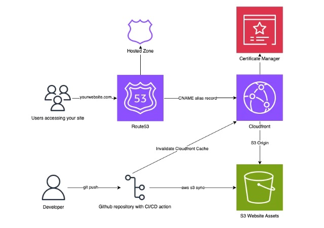
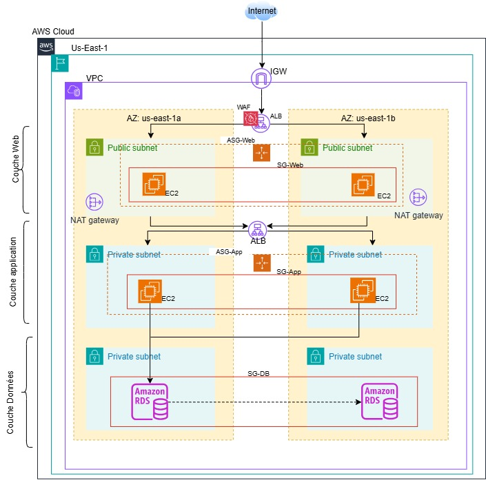

Projets AWS
-

Projet 1
Déploiement d’un site web statique sur AWS avec CI/CD (S3 + CloudFront)
Un site portfolio hébergé sur S3, diffusé par CloudFront en HTTPS et mis à jour automatiquement par un pipeline GitHub Actions.
- S3
- CloudFront
- Route 53
- ACM
- GitHub Actions
-

Projet 2
Déploiement d’une architecture AWS à 3 niveaux avec Terraform
Une infrastructure web, applicative et données répartie sur deux zones de disponibilité, protégée par un WAF et entièrement décrite avec Terraform.
- Terraform
- VPC
- ALB
- WAF
- RDS
Des télécommunications au cloud AWS
Les notions de réseau au cœur des télécommunications se retrouvent presque telles quelles dans AWS. Mes projets les mettent en pratique.
| Notion de réseau et de télécommunications | Dans AWS, dans mes projets |
|---|---|
| Plan d’adressage IP et sous-réseaux | VPC avec six sous-réseaux et plages CIDR définies par variables (projet 3 niveaux) |
| Routage et passerelles | Tables de routage, Internet Gateway et NAT Gateway par zone |
| Redondance et haute disponibilité | Deux zones de disponibilité, Auto Scaling, base RDS Multi-AZ |
| Filtrage et sécurité réseau | Groupes de sécurité en cascade, pare-feu applicatif WAF, HTTPS |
| Répartition de charge | Application Load Balancer public et interne |
| Résolution de noms et diffusion de contenu | Route 53 et CloudFront pour nicktechs.com (projet de site statique) |
| Supervision et alarmes | Journaux et alarmes CloudWatch sur le WAF |
Compétences clés
| Domaine | Compétences |
|---|---|
| Réseaux d’accès FTTH | Déploiement, test et validation d’éléments FTTH (OLT, ONT, box, cartes, logiciels, releases), installation, configuration et commissioning d’OLT et de MSAN, réseau FTTC |
| Services et tests d’acceptance | HSI, VoIP, L2VPN, L3VPN |
| Voix sur IP | SIP, softswitch ENTICE, SBC et media gateway AudioCodes, exploitation d’un centre de transit international (passerelle VoIP internationale) |
| Systèmes | Red Hat Linux, CentOS |
| Validation et qualité | Stratégies de test (VABF, VNR), cahiers de tests, VSR, reproduction et analyse d’incidents de production |
| Exploitation et supervision | Support technique du réseau FTTH au sein du NOC, exploitation et maintenance de réseau, formation des équipes de supervision, d’exploitation et de maintenance |
| Pilotage | Pilotage des fournisseurs, suivi des anomalies |
| Support IT | Support technique de tous niveaux (logiciel, matériel, systèmes d’exploitation), diagnostic et résolution d’incidents, conseil et formation des utilisateurs |
| Architecture AWS | Architecture à 3 niveaux sur deux zones de disponibilité, haute disponibilité, estimation et optimisation des coûts |
| Services AWS mis en œuvre | S3, CloudFront, Route 53, ACM, IAM, VPC, NAT Gateway, Application Load Balancer, EC2 Auto Scaling, RDS MySQL, WAF, CloudWatch, Systems Manager |
| Automatisation | Terraform, GitHub Actions (CI/CD), AWS CLI, Git |
| Sécurité cloud | Groupes de sécurité en cascade, WAF, IAM avec moindre privilège, HTTPS |
| Communication et formation | Communication à tous les niveaux, formation d’équipes, documentation technique de projets, schémas d’architecture |
Certifications
Des compétences validées par AWS.
- AWS Certified Solutions Architect – AssociateAmazon Web Services · 2026Vérifier le badge (Credly)Page de la certification
- AWS Certified Cloud PractitionerAmazon Web Services · 2025Vérifier le badge (Credly)Page de la certification
À propos
Professionnel des télécommunications et certifié AWS, je relie deux univers : celui des réseaux et celui du cloud. Découvrez mon parcours et la façon dont mes projets les rapprochent.